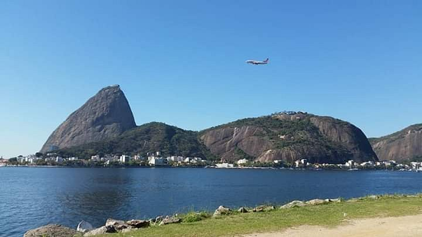
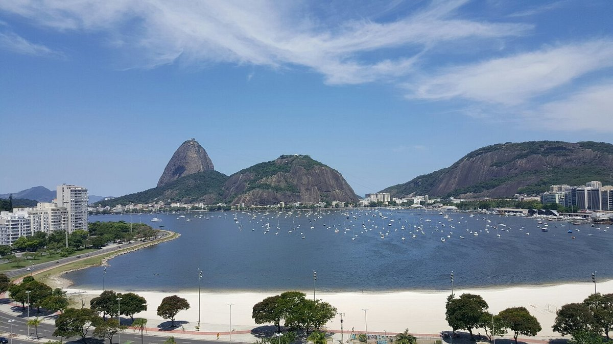
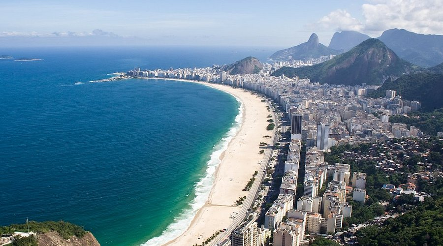
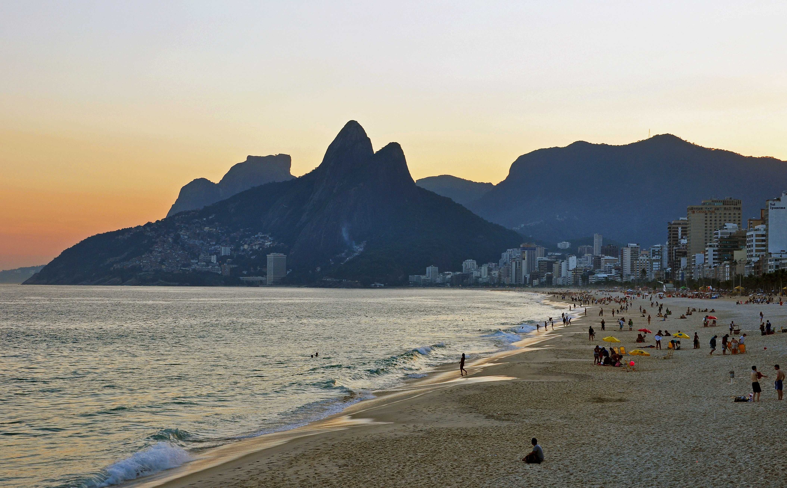
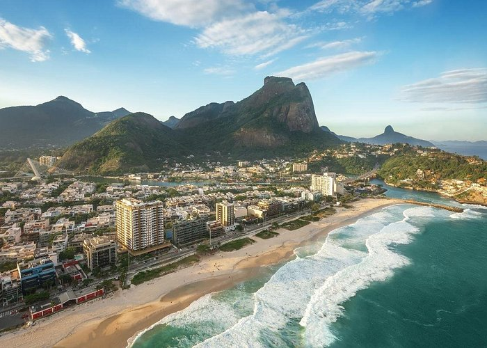
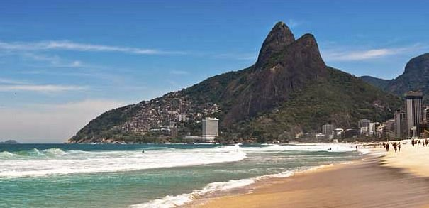
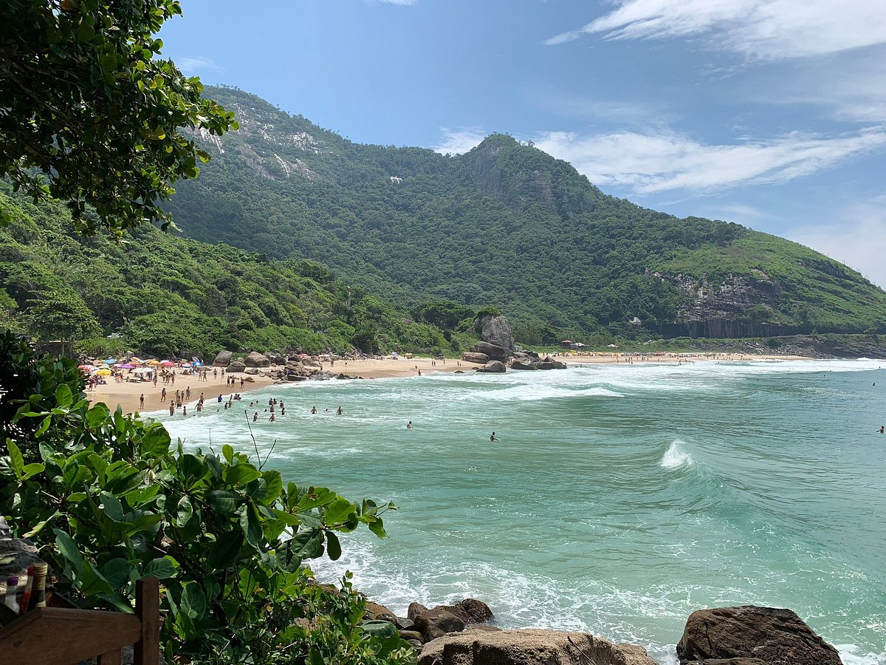

Playas icónicas de Rio de Janeiro
Playa Flamengo

En el sur de Río de Janeiro, en el Bairro do Flamengo, la playa de Flamengo es la primera de las playas de las laderas de Bahía de Guanabara, seguida por las playas de Botafogo y Urca. Es la playa más cercana al centro de la ciudad. El barrio que se encuentra detrás de él, una vez habitado por las clases más ricas, conserva un encanto antiguo. Muy concurrido durante el día y lleno de vida por la noche.
Playa de Botafogo

La playa de Botafogo, de unos 700 metros de largo, está situada en el distrito de Botafogo, que conecta el centro y el sur de la ciudad y se extiende entre Flamengo y el club náutico de Río. El nombre de Botafogo proviene probablemente de João Pereira de Souza Botafogo, el primer colono portugués que vivió en la zona.
La playa de Botafogo es recomendada por su especial ubicación que ofrece una vista frontal del legendario Pão de Açúcar, la Bahía de Guanabara y el Morro da Urca.
Playa de Copacabana

La playa más famosa de la ciudad, de Brasil y, probablemente, del mundo. Se encuentra en el barrio del mismo nombre, en el sur de Río de Janeiro. Una larga extensión de unos 4 km, con su característica forma de media luna, también llamada Princesinha do Mar, que cuenta, entre sus características distintivas, con el calçadão: el elegante suelo del paseo marítimo, con olas blancas y negras dibujadas en piedra portuguesa, diseñado por el arquitecto paisajista Burle Marx.
Aquí tienen lugar eventos musicales, deportivos y de todo tipo. Desde campeonatos de voleibol de playa y fútbol sala hasta grandes conciertos con los más famosos de la música brasileña. Este espacio está preparado para recibir estos eventos y grandes multitudes, también a nivel gastronómico
Playa de Ipanema

No se puede imaginar Río de Janeiro sin pensar en Ipanema. Sigue siendo una de las playas más concurridas de la ciudad. Una playa muy vivida por cariocas y famosos. Ipanema es también el lugar de encuentro más popular y animado de Río. Sus 2 kilómetros se extienden desde un tramo de mar más animado hasta un tramo de olas más tranquilas.
En la playa de Ipanema se puede encontrar de todo: hay quien disfruta del agua de coco, quien camina o va en bicicleta por el paseo marítimo, o quien juega con una pelota. En particular, las zonas de la playa con sus fuertes olas y corrientes son un gimnasio ideal para los amantes del surf.
Además, tampoco se puede hablar de Ipanema si no se menciona la canción Garota de Ipanema Vinicius y Jobim, que se convirtió famosa gracias a Frank Sinatra. Es el himno de esta ciudad y la playa.
Playa de Barra

La playa de Barra da Tijuca es la mayor playa de Río de Janeiro, con sus 18 kilómetros de longitud, la mayoría de los cuales están completamente urbanizados. Dispone de un paseo marítimo que recorre la avenida, el carril bici y muchos quioscos. También llamado simplemente Barra es el lugar perfecto para los deportes acuáticos, especialmente el surf, el windsurf y el kitesurf.
Las aguas verdes y cristalinas de Barra atraen no sólo a los deportistas sino también a todos los amantes del mar que vienen aquí desde todos los lugares del mundo. Una playa tan larga puede ofrecer tanto olas más fuertes como aguas más tranquilas
Playa de Leblon

Leblon ofrece la ventaja de ser más tranquila y menos frecuentada que las más famosas playas cariocas, pero es igualmente bella y emociona por su ubicación frente a toda la grandeza del Morro Dois Irmãos, que al atardecer se convierte en poesía dando colores y matices increíbles, inolvidables.
Praia da Reserva

Como su nombre lo indica, la playa de Praia da Reserva, situada entre la playa de la Barra y la playa del Recreio dos Bandeirantes, es una reserva natural. La población local está trabajando duro para preservarla tal como es: espléndida e intacta. Al no estar muy cerca de Río, esta playa no está muy concurrida
La Praia da Reserva es considerada una "playa verde", también porque hay pocos quioscos y vendedores ambulantes.
Es una playa muy popular entre los surfistas, windsurfistas y kitesurfistas porque ofrece las condiciones ideales para estos deportes, como olas altas y un fuerte viento que sopla con bastante frecuencia